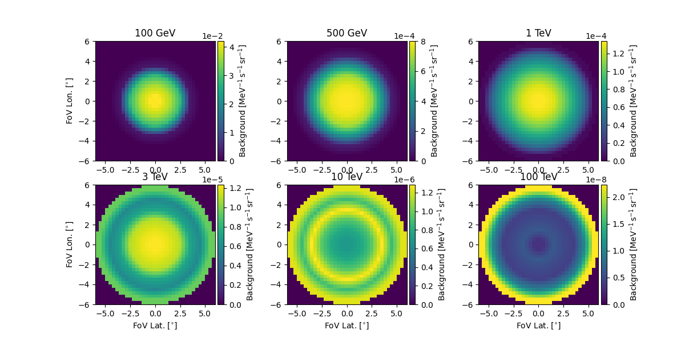

Note
Go to the end to download the full example code. or to run this example in your browser via Binder
CTAO with Gammapy#
Access and inspect CTAO data and instrument response functions (IRFs) using Gammapy.
Introduction#
The Cherenkov Telescope Array Observatory (CTAO) is the next generation ground-based observatory for gamma-ray astronomy. Gammapy is the core library for the Cherenkov Telescope Array Observatory (CTAO) science tools (2017ICRC…35..766D and CTAO Press Release).
CTAO will start taking data in the coming years. For now, to learn how to analyse CTAO data and to use Gammapy, if you are a member of the CTAO consortium, you can use the simulated dataset from:
the CTA first data challenge which ran in 2017 and 2018 (see here for CTAO members)
the CTAO Science Data Challenge of 2024 (see here for CTAO members)
Gammapy fully supports the FITS data formats (events, IRFs) used in CTA 1DC and SDC. The XML sky model format is not supported, but are also not needed to analyse the data, you have to specify your model via the Gammapy YAML model format, or Python code, as shown below.
You can also use Gammapy to simulate CTAO data and evaluate CTAO performance using the CTAO response files. Two sets of responses are available for different array layouts:
the Omega configuration (prod3b, 2016): https://zenodo.org/records/5163273,
the Alpha configuration (prod5, 2021): https://zenodo.org/records/5499840.
They are all fully supported by Gammapy.
Tutorial overview#
This notebook shows how to access CTAO data and instrument response functions (IRFs) using Gammapy, and gives some examples how to quick look the content of CTAO files, especially to see the shape of CTAO IRFs.
At the end of the notebooks, we give several links to other tutorial notebooks that show how to simulate CTAO data and how to evaluate CTAO observability and sensitivity, or how to analyse CTAO data.
Note that the FITS data and IRF format currently used by CTAO is the one documented at https://gamma-astro-data-formats.readthedocs.io/, and is also used by H.E.S.S. and other Imaging Atmospheric Cherenkov Telescopes (IACTs). So if you see other Gammapy tutorials using e.g. H.E.S.S. example data, know that they also apply to CTAO, all you have to do is to change the loaded data or IRFs to CTAO.
Setup#
import os
from pathlib import Path
from astropy import units as u
# %matplotlib inline
import matplotlib.pyplot as plt
from IPython.display import display
from gammapy.data import DataStore, EventList
from gammapy.irf import EffectiveAreaTable2D, load_irf_dict_from_file
CTA 1DC#
The CTA first data challenge (1DC) ran in 2017 and 2018. It is described in detail here and a description of the data and how to download it is here.
You should download caldb.tar.gz (1.2 MB), models.tar.gz (0.9
GB), index.tar.gz (0.5 MB), as well as optionally the simulated
survey data you are interested in: Galactic plane survey gps.tar.gz
(8.3 GB), Galactic center gc.tar.gz (4.4 MB), Extragalactic survey
egal.tar.gz (2.5 GB), AGN monitoring agn.wobble.tar.gz (4.7 GB).
After download, follow the instructions how to untar the files, and
set a CTADATA environment variable to point to the data.
For convenience, since the 1DC data files are large and not publicly
available to anyone, we have taken a tiny subset of the CTA 1DC data,
four observations with the southern array from the GPS survey, pointing
near the Galactic center, and included them at $GAMMAPY_DATA/cta-1dc.
Files#
Next we will show a quick overview of the files and how to load them, and some quick look plots showing the shape of the CTAO IRFs. How to do CTAO simulations and analyses is shown in other tutorials, see links at the end of this notebook.
# !ls -1 $GAMMAPY_DATA/cta-1dc
# !ls -1 $GAMMAPY_DATA/cta-1dc/data/baseline/gps
# !ls -1 $GAMMAPY_DATA/cta-1dc/caldb/data/cta/1dc/bcf/South_z20_50h
# !ls -1 $GAMMAPY_DATA/cta-1dc/index/gps
The access to the IRFs files requires to define a CALDB environment
variable. We are going to define it only for this notebook so it won’t
overwrite the one you may have already defined.
os.environ["CALDB"] = os.environ["GAMMAPY_DATA"] + "/cta-1dc/caldb"
Datastore#
You can use the DataStore to load via the index files
data_store = DataStore.from_dir("$GAMMAPY_DATA/cta-1dc/index/gps")
print(data_store)
Data store:
HDU index table:
BASE_DIR: /home/runner/work/gammapy-docs/gammapy-docs/gammapy-datasets/dev/cta-1dc/index/gps
Rows: 24
OBS_ID: 110380 -- 111630
HDU_TYPE: [np.str_('aeff'), np.str_('bkg'), np.str_('edisp'), np.str_('events'), np.str_('gti'), np.str_('psf')]
HDU_CLASS: [np.str_('aeff_2d'), np.str_('bkg_3d'), np.str_('edisp_2d'), np.str_('events'), np.str_('gti'), np.str_('psf_3gauss')]
Observation table:
Observatory name: 'CTA first data challenge (1DC)'
Number of observations: 4
If you can’t download the index files, or got errors related to the data
access using them, you can generate the DataStore directly from the
event files.
path = Path(os.environ["GAMMAPY_DATA"]) / "cta-1dc/data"
paths = list(path.rglob("*.fits"))
data_store = DataStore.from_events_files(paths)
print(data_store)
data_store.obs_table[["OBS_ID", "GLON_PNT", "GLAT_PNT", "IRF"]]
observation = data_store.obs(110380)
print(observation)
Data store:
HDU index table:
BASE_DIR: .
Rows: 24
OBS_ID: 110380 -- 111630
HDU_TYPE: [np.str_('aeff'), np.str_('bkg'), np.str_('edisp'), np.str_('events'), np.str_('gti'), np.str_('psf')]
HDU_CLASS: [np.str_('aeff_2d'), np.str_('bkg_3d'), np.str_('edisp_2d'), np.str_('events'), np.str_('gti'), np.str_('psf_3gauss')]
Observation table:
Observatory name: 'N/A'
Number of observations: 4
Observation
obs id : 110380
tstart : 59235.50
tstop : 59235.52
duration : 1800.00 s
pointing (icrs) : 267.7 deg, -29.6 deg
deadtime fraction : 2.0%
Events#
We can load events data via the data store and observation, or
equivalently via the EventList class by specifying the
EVENTS filename.
The quick-look events.peek() plot below shows that CTAO has a field
of view of a few degrees, and two energy thresholds, one significantly
below 100 GeV where the CTAO large-size telescopes (LSTs) detect events,
and a second one near 100 GeV where the mid-sized telescopes (MSTs)
start to detect events.
Note that most events are “hadronic background” due to cosmic ray
showers in the atmosphere that pass the gamma-hadron selection cuts for
this analysis configuration. Since this is simulated data, column
MC_ID is available that gives an emission component identifier code,
and the EVENTS header in events.table.meta can be used to look up
which MC_ID corresponds to which emission component.
Events can be accessed from the observation object like:
Or read directly from an event file:
events = EventList.read(
"$GAMMAPY_DATA/cta-1dc/data/baseline/gps/gps_baseline_110380.fits"
)
Here we print the data from the first 5 events listed in the table:
display(events.table[:5])
TIME ENERGY RA ... DETX DETY MC_ID
TeV deg ... deg deg
----------------- ----------- ---------- ... ---------- ---------- -----
59235.50003524848 0.03902182 -92.63541 ... -0.9077294 -0.2727693 2
59235.50006085648 0.030796371 -92.64103 ... 1.3443842 -0.2838398 2
59235.50010208971 0.04009629 -93.20372 ... 1.0049409 -0.7769775 2
59235.50010433306 0.039580025 -94.03383 ... 0.32684833 -1.496021 2
59235.50017140133 0.03035851 -93.330505 ... -0.716062 -0.8733348 2
And show a summary plot:
events.peek()
plt.show()

IRFs#
The CTAO instrument response functions (IRFs) are given as FITS files in
the caldb folder, the following IRFs are available:
effective area
energy dispersion
point spread function
background
Notes:
The IRFs contain the energy and offset dependence of the CTAO response
CTA 1DC was based on an early version of the CTAO FITS responses produced in 2017, improvements have been made since.
The point spread function was approximated by a Gaussian shape
The background is from hadronic and electron air shower events that pass CTAO selection cuts. It was given as a function of field of view coordinates, although it is radially symmetric.
The energy dispersion in CTA 1DC is noisy at low energy, leading to unreliable spectral points for some analyses.
The CTA 1DC response files have the first node at field of view offset 0.5 deg, so to get the on-axis response at offset 0 deg, Gammapy has to extrapolate. Furthermore, because diffuse gamma-rays in the FOV were used to derive the IRFs, and the solid angle at small FOV offset circles is small, the IRFs at the center of the FOV are somewhat noisy. This leads to unstable analysis and simulation issues when using the DC1 IRFs for some analyses.
print(observation.aeff)
irf_filename = (
"$GAMMAPY_DATA/cta-1dc/caldb/data/cta/1dc/bcf/South_z20_50h/irf_file.fits"
)
irfs = load_irf_dict_from_file(irf_filename)
print(irfs)
EffectiveAreaTable2D
--------------------
axes : ['energy_true', 'offset']
shape : (42, 6)
ndim : 2
unit : m2
dtype : >f4
/home/runner/work/gammapy-docs/gammapy-docs/gammapy/.tox/build_docs/lib/python3.11/site-packages/astropy/units/core.py:2085: UnitsWarning: '1/s/MeV/sr' did not parse as fits unit: Numeric factor not supported by FITS If this is meant to be a custom unit, define it with 'u.def_unit'. To have it recognized inside a file reader or other code, enable it with 'u.add_enabled_units'. For details, see https://docs.astropy.org/en/latest/units/combining_and_defining.html
warnings.warn(msg, UnitsWarning)
{'aeff': <gammapy.irf.effective_area.EffectiveAreaTable2D object at 0x7f57605ed2d0>, 'psf': <gammapy.irf.psf.parametric.EnergyDependentMultiGaussPSF object at 0x7f5761bd99d0>, 'edisp': <gammapy.irf.edisp.core.EnergyDispersion2D object at 0x7f5761fbc090>, 'bkg': <gammapy.irf.background.Background3D object at 0x7f5760199610>}
Effective area#
# Equivalent alternative way to load IRFs directly
aeff = EffectiveAreaTable2D.read(irf_filename, hdu="EFFECTIVE AREA")
print(aeff)
irfs["aeff"].peek()
plt.show()
# What is the on-axis effective area at 10 TeV?
print(aeff.evaluate(energy_true="10 TeV", offset="0 deg").to("km2"))

EffectiveAreaTable2D
--------------------
axes : ['energy_true', 'offset']
shape : (42, 6)
ndim : 2
unit : m2
dtype : >f4
3.783587001383003 km2
Energy dispersion#

Point spread function#

This is how for analysis you could slice out the PSF at a given field of view offset
plt.figure(figsize=(8, 5))
irfs["psf"].plot_containment_radius_vs_energy(
offset=[1] * u.deg, fraction=[0.68, 0.8, 0.95]
)
plt.show()

Background#
The background is given as a rate in units MeV-1 s-1 sr-1.

1.2053315944536949e-05 1 / (MeV s sr)
To visualise the background at particular energies:
Source models#
The 1DC sky model is distributed as a set of XML files, which link to numerous other FITS and text files. Gammapy does not natively support this XML format. Instead, we use YAML-based model format that improves on the XML format by being easier to write and read, add relevant information (units for physical quantities), and omit useless information (e.g. parameter scales in addition to values).
If you need or prefer to work with the original XML model files, you can use tools like
ElementTree
from the Python standard library, or
xmltodict installed through
pip install xmltodict. Here’s an example how to load the information
for a given source, and convert it into the sky model format Gammapy
understands.
With the following command we can see what the XML file looks like
(uncomment it if you have installed xmltodict).
# !tail -n 20 $CTADATA/models/models_gps.xml
Here is an example on how to create a gammapy source model from this
# import xmltodict
# from astropy import units as u
# from gammapy.modeling.models import PowerLawSpectralModel, PointSpatialModel, SkyModel
# # Read XML file
# filename = "$CTADATA/models/models_gps.xml"
# # Access spectrum parameters
# data = xmltodict.parse(open(filename).read())
# source0 = data["source_library"]["source"][0]
# spectrum0 = source0["spectrum"]["parameter"]
# spatial0 = source0["spatialModel"]
# # Printing the type shows we have a point-like model
# print(spatial0['@type'])
# # Helper function to get parameter by name
# def get_param(params, name):
# for p in params:
# if p["@name"] == name:
# return float(p["@value"]) * float(p["@scale"])
# raise KeyError(f"Parameter '{name}' not found.")
# # Helper to convert parameter value * scale
# par_to_val = lambda par: float(par["@value"]) * float(par["@scale"])
# # Create a spectral model
# spectral_model = PowerLawSpectralModel(
# amplitude=par_to_val(spectrum0[0]) * u.Unit("cm-2 s-1 MeV-1"),
# index=par_to_val(spectrum0[1]),
# reference=par_to_val(spectrum0[2]) * u.Unit("MeV"),
# )
# print(spectral_model)
# # Create the spatial model
# spatial_params = spatial0["parameter"]
# spatial_model = PointSpatialModel(
# lon_0=get_param(spatial_params, "RA") * u.deg,
# lat_0=get_param(spatial_params, "DEC") * u.deg,
# frame="icrs"
# )
# print(spatial_model)
# # Create the SkyModel
# sky_model = SkyModel(spectral_model=spectral_model, spatial_model=spatial_model, name=source0['@name'])
# print(sky_model)
Latest CTAO performance files#
CTA 1DC is useful to learn how to analyse CTAO data. But to do simulations and studies for CTAO now, you should get the most recent CTAO IRFs in FITS format from https://www.ctao.org/for-scientists/performance/.
If you want to use other response files, the following code cells (remove the # to uncomment) explain how to proceed. This example is made with the Alpha configuration (Prod5).
# !curl -o cta-prod5-zenodo-fitsonly-v0.1.zip https://zenodo.org/records/5499840/files/cta-prod5-zenodo-fitsonly-v0.1.zip
# !unzip cta-prod5-zenodo-fitsonly-v0.1.zip
# !ls fits/
# !tar xf fits/CTA-Performance-prod5-v0.1-South-40deg.FITS.tar.gz -C fits/.
# !ls fits/*.fits.gz
# irfs1 = load_irf_dict_from_file("fits/Prod5-South-40deg-SouthAz-14MSTs37SSTs.180000s-v0.1.fits.gz")
# irfs1["aeff"].plot_energy_dependence()
# irfs2 = load_irf_dict_from_file("fits/Prod5-South-40deg-SouthAz-14MSTs37SSTs.1800s-v0.1.fits.gz")
# irfs2["aeff"].plot_energy_dependence()
Exercises#
Load the EVENTS file for
obs_id=111159as aEventListobject.Use
EventList.tableto find the energy, sky coordinate and time of the highest-energy event.Use
pointing_radecto find the pointing position of this observation, and useastropy.coordinates.SkyCoordmethods to find the field of view offset of the highest-energy event.What is the effective area and PSF 68% containment radius of CTAO at 1 TeV for the
South_z20_50hconfiguration used for the CTA 1DC simulation?Get the latest CTAO FITS performance files from https://www.ctao.org/for-scientists/performance/ and run the code example above. Make an effective area ratio plot of 40 deg zenith versus 20 deg zenith for the
South_z40_50handSouth_z20_50hconfigurations.
Next steps#
Learn how to analyse data with High level interface and Low level API or any other Gammapy analysis tutorial.
Learn how to evaluate CTAO observability and sensitivity with 3D map simulation, 1D spectrum simulation or Point source sensitivity.